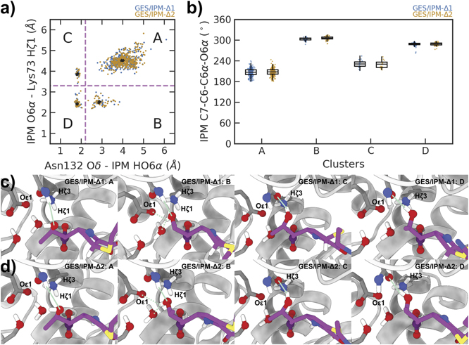
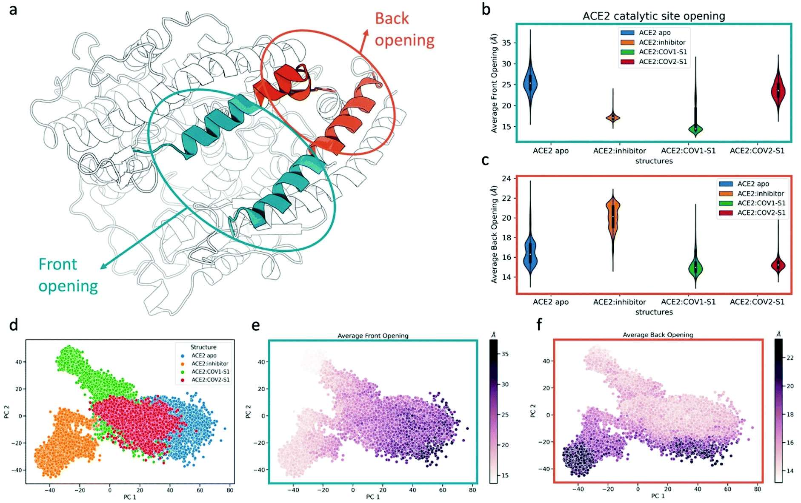
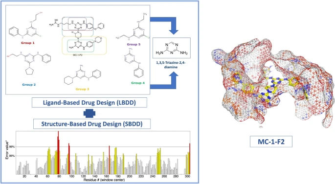
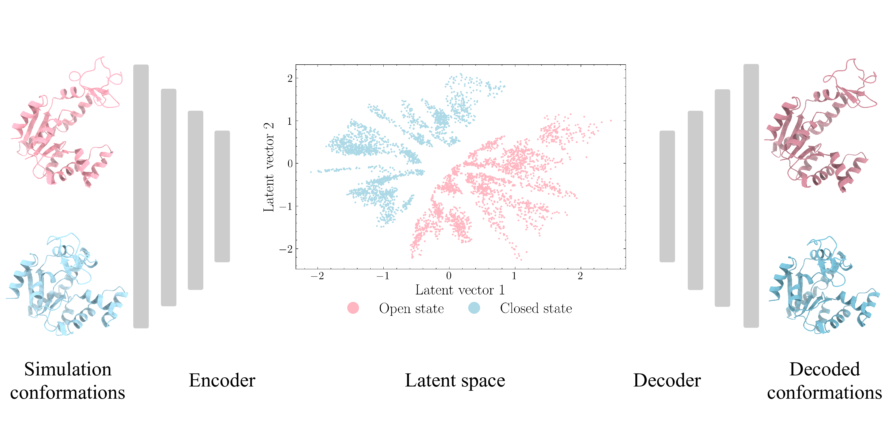
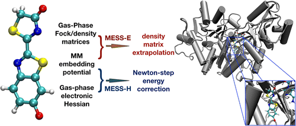

Publications
Google Scholar Profile
 Orcid.org/0000-0002-2488-0239
Orcid.org/0000-0002-2488-0239
The PDF copies provided on this page are for preview only. Downloading is not permitted.
Publications Affiliated with SMU:
63. Song, Z.; Trozzi, F.; Tian, H.; Chao, Y.; Tao, P.* Mechanistic Insights into Enzyme Catalysis from Explaining Machine-Learned Quantum Mechanical and Molecular Mechanical Minimum Energy Pathways. 2022, ACS Phys. Chem Au, 2, 316−330 DOI: 10.1021/acsphyschemau.2c00005
62. Song, Z.; Tao, P.* Graph-learning guided mechanistic insights into imipenem hydrolysis in GES carbapenemases. 2022, Electron. Struct. 4, 034001 DOI: 10.1088/2516-1075/ac7993
61. Trozzi, F.; Karki, N.; Song, Z.; Verma, N.; Kraka, E.; Zoltowski, B. D.; Tao, P.* Allosteric control of ACE2 peptidase domain dynamics. 2022, Org. Biomol. Chem. 20, 3605 DOI: 10.1039/d2ob00606e
60. Ibrahim, M. T.; Lee, J.; Tao, P* Homology modeling of Forkhead box protein C2: identification of potential inhibitors using ligand and structure‐based virtual screening. 2022, Molecular Diversity. DOI: 10.1007/s11030-022-10519-0
59. Ibrahim, M. T.; Tao, P* Computational investigation of peptidomimetics as potential inhibitors of SARS-CoV-2 spike protein. 2022, Journal of Biomolecular Structure and Dynamics. DOI: 10.1080/07391102.2022.2116601
58. Xiao S.; Tian H.; Tao, P* PASSer2.0: Accurate Prediction of Protein Allosteric Sites Through Automated Machine Learning. 2022, Frontiers in Molecular Biosciences. 9:879251. DOI: 10.3389/fmolb.2022.879251
57. Bai, F.; Puk, K. M.; Liu, J.; Zhou, H.; Tao, P.; Zhou, W.; Wang, S.* Sparse group selection and analysis of function-related residue for protein-state recognition. 2022, J Comput Chem. 43: 1342–1354. DOI: 10.1002/jcc.26937
56. Ibrahim, M. T.; Trozzi, F.; Tao, P* Dynamics of hydrogen bonds in the secondary structures of allosteric protein Avena Sativa phototropin 1. 2021, Computational and Structural Biotechnology Journal. 20, 50-64. DOI: 10.1016/j.csbj.2021.11.038
55. Tian H.; Jiang X.; Trozzi F.; Xiao S.; Larson E.; Tao P.* Explore protein conformational space with variational autoencoder. Front. Mol. Biosci. 8:781635. DOI: 10.3389/fmolb.2021.781635
54. Song, Z.; Trozzi, F.; Palzkill, T.; Tao, P.* QM/MM modeling of class A β-lactamases reveals distinct acylation pathways for ampicillin and cefalexin, 2021, Org. Biomol. Chem., 19, 9182-9189. DOI: 10.1039/d1ob01593a
53. Trozzi, F.; Wang, X; Tao, P.* UMAP as a Dimensionality Reduction Tool for Molecular Dynamics Simulations of Biomacromolecules: A Comparison Study. 2021, J. Phys. Chem. B 125, 5022−5034. DOI: 10.1021/acs.jpcb.1c02081
52. Trozzi F.; Wang F.; Verkhivker G.; Zoltowski BD.; Tao P.* Dimeric allostery mechanism of the plant circadian clock photoreceptor ZEITLUPE. PLoS computational biology. 2021 Jul 26;17(7):e1009168. DOI: 10.1371/journal.pcbi.1009168
51. Tian, H.; Jiang, X.; Tao, P.* PASSer: Prediction of Allosteric Sites Server. 2021, Machine Learning: Science and Technology. DOI: 10.1088/2632-2153.abe6d6 PASSer websever

50. Stojanoski, V.; Hu, L.; Sankaran, B.; Wang, F.; Tao, P.; Prasad, B. V. V.; and Palzkill, T.* Mechanistic Basis of OXA-48-like β‐Lactamases’ Hydrolysis of Carbapenems. 2021, ACS Infect. Dis. 7, 445-460 DOI: 10.1021/acsinfecdis.0c00798

49. Karki, N.; Verma, N.; Trozzi, F.; Tao, P.; Kraka, E.; and Zoltowski, B. Predicting Potential SARS-COV-2 Drugs—In Depth Drug Database Screening Using Deep Neural Network Framework SSnet, Classical Virtual Screening and Docking. 2021, Int. J. Mol. Sci. 22, 1573 DOI: 10.3390/ijms22041573
48. Verkhivker, G. M.*; Agajanian, S.; Hu, G.; and Tao, P. Allosteric Regulation at the Crossroads of New Technologies: Multiscale Modeling, Networks, and Machine Learning. 2020, Front. Mol. Biosci., 7, 136 DOI: 10.3389/fmolb.2020.00136
47. Song, Z.; Zhou, H.; Tian, H.; Wang, X.; Tao, P.* Unraveling the energetic significance of chemical events in enzyme catalysis via machine-learning based regression approach. 2020, Communications Chemistry 3, 134 DOI: 10.1038/s42004-020-00379-w
46. Tian, H.; Trozzi, F.; Zoltowski, B. D.; Tao, P.* Deciphering the Allosteric Process of the Phaeodactylum tricornutum Aureochrome 1a LOV Domain. 2020, J. Phys. Chem. B, 124, 41, 8960–8972 DOI: 10.1021/acs.jpcb.0c05842
45. Tian, H.; Tao, P.* ivis Dimensionality Reduction Framework for Biomacromolecular Simulations. 2020, J. Chem. Inf. Model. DOI: 10.1021/acs.jcim.0c00485

44. Tian, H.; Tao, P.* Deciphering the protein motion of S1 subunit in SARS-CoV-2 spike glycoprotein through integrated computational methods. 2020, Journal of Biomolecular Structure and Dynamics DOI: 10.1080/07391102.2020.1802338

43. Wang, F.; Tao, P.* Exploring free energy profile of petroleum thermal cracking mechanisms. 2020, J. Mol. Mod., 26:15 DOI: 10.1007/s00894-019-4273-3
42. Wang, F.; Zhou, H.; Wang, X.; Tao, P.* Dynamical Behavior of β-Lactamases and Penicillin-Binding Proteins in Different Functional States and Its Potential Role in Evolution. 2019, Entropy, 21(11), 1130 DOI: 10.3390/e21111130
41. Zhou, H.*; Wang, F.; Bennett, D. I. G.; Tao, P.* Directed kinetic transition network model. 2019, J. Chem. Phys. 151, 144112 DOI: 10.1063/1.5110896
40. Hayatshahi, H. S.; Ahuactzin, E.; Tao, P.; Wang, S.; Liu, J.* Probing Protein Allostery as a Residue-Specific Concept via Residue Response Maps. 2019, J. Chem. Inf. Model. 59, 4691-4705 DOI: 10.1021/acs.jcim.9b00447
39. Wang, F.; Shen, L.; Zhou, H.; Wang, S.; Wang, X.; Tao, P.* Machine Learning Classification Model for Functional Binding Modes of TEM-1 β-Lactamase. 2019, Front. Mol. Biosci. 6:47 DOI: 10.3389/fmolb.2019.00047
38. Zhou, H.; Dong, Z.; Verkhivker, G.; Zoltowski, B. D.; Tao, P.*; Allosteric mechanism of the circadian protein Vivid resolved through Markov state model and machine learning analysis. PLoS Comput Biol. 2019, 15(2): e1006801 DOI: 10.1371/journal.pcbi.1006801
37. Zhou, H.; Tao, P.*; REDAN: relative entropy-based dynamical allosteric network model. Mol. Phys. 2018 DOI: 10.1080/00268976.2018.1543904
36. Zhou, H.; Wang, F.; Tao, P.*; t-Distributed Stochastic Neighbor Embedding (t-SNE) Method with the Least Information Loss for Macromolecular Simulations. J. Chem. Theory Comput. 2018, 14, 5499-5510. DOI: 10.1021/acs.jctc.8b00652
35. Mehmood, A.; Jones, S. I.; Tao, P.; Janesko, B. G.*, An Orbital-Overlap Complement to Ligand and Binding Site Electrostatic Potential Maps. J. Chem. Inf. Model. 2018, 58, 1836-1846. DOI: 10.1021/acs.jcim.8b00370
34. Zahler, C. T.; Zhou, H.; Abdolvdahabi, A.; Holden, R. L.; Rasouli, S.; Tao, P.; Shaw, B. F. Direct Measurement of Charge Regulation in Metalloprotein ElectronTransfer, Angew. Chem. Int. Ed. 2018, 57, 5364-5368 DOI: 10.1002/anie.201712306
This paper was selected as Very Important Paper (VIP) by the journal editor and featured on the journal cover.
33. Zhou, H.; Dong, Z.; Tao, P.*; Novel Application of Machine Learning Approaches on the Recognition of Protein States and Identification of Function-Related Residues. J. Comput. Chem., 2018, 39, 1481-1490 DOI: 10.1002/jcc.25218
32. Wang, F.; Zhou, H.; Olademehin, O. P.; Kim, S. J.; Tao, P. Insights into Key Interactions between Vancomycin and Bacterial Wall Structures. ACS Omega 2018, 3, 37−45 DOI: 10.1021/acsomega.7b01483
Check out a short online liveslides presentation featuring this work. link
31. Zhou, H.; Tao, P. Dynamics Sampling in Transition Pathway Space. J. Chem. Theory Comput. 2018, 14, 14−29 DOI: 10.1021/acs.jctc.7b00606
Check out a short online liveslides presentation featuring this work. link
30. Dong, Z.; Zhou, H.; Tao, P. Combining protein sequence, structure, and dynamics: A novel approach for functional evolution analysis of PAS domain superfamily. Protein Science 2017, 27, 421-430 DOI: 10.1002/pro.3329
29. Zhou, H.; Zoltowski, B. D.; Tao, P. Revealing Hidden Conformational Space of LOV Protein VIVID Through Rigid Residue Scan Simulations. Scientific Reports 2017, 7, 46626 DOI: 10.1038/srep46626

28. Tao, P.; Hackett, J. C.; Kim, J. Y.; Saffen, D.; Hayes, C. J.; Hadad, C. “Molecular Determinants of TRPC6 Channel Recognition by FKBP12” in Computational Chemistry Methodology in Structural Biology and Materials Sciences, ISBN 978-1-77188-568-3, Apple Academic Press, Inc., 2017.
27. Chang, J.; Zhou, H.; Preobrazhenskaya, M.; Tao, P.;Kim, S. J. The Carboxyl Terminus of Eremomycin Facilitates Binding to the Non-d-Ala-d-Ala Segment of the Peptidoglycan Pentapeptide Stem. Biochemistry 2016, 55, 3383–3391. DOI: 10.1021/acs.biochem.6b00188
26. Kalescky, R.; Zhou, H.; Liu, J.; Tao, P. (2016) Rigid Residue Scan Simulations Systematically Reveal Residue Entropic Roles in Protein Allostery. PLoS Comput Biol 12(4): e1004893. DOI: 10.1371/ journal.pcbi.1004893
25. Cao, J.; Lopez, R.; Thacker J. M.; Moon, J. Y.; Jiang, C.; Morris, S. N. S.; Bauer, J. H.; Tao, P.; Mason, R. P.; Lippert, A. R.* "Chemiluminescent Probes for Imaging H2S in Living Animals." Chem. Sci. 2015, 6, 1979-1985. DOI: 10.1039/C4SC03516J
24. Kalesky, R.; Liu, J.; Tao, P.; “Identifying Key Residues for Protein Allostery through Rigid Residue Scan”. J. Phys. Chem. A 2015, 119, 1689-1700. DOI: 10.1021/jp5083455
23. Sodt, A. J.; Mei, Y.; König, G.; Tao, P.; Steele, R.; Brooks, B. R.; Shao, Y. “Multiple Environment Single System Quantum Mechanical/Molecular Mechanical (MESS-QM/MM) Calculations. 1. Estimation of Polarization Energies”. J. Phys. Chem. A 2015, 119, 1511-1523. DOI: 10.1021/jp5072296

22. Tao, P.; Alexander J. Sodt, Yihan Shao, Gerhard König, Bernard R. Brooks; “Computing the Free Energy along a Reaction Coordinate Using Rigid Body Dynamics”. J. Chem. Theory Comput. 2014, 10, 4198-4207. DOI: 10.1021/ct500342h
Publications Unaffiliated with SMU:
21. Tao, P.; Larkin, J. D.; Brooks, B. R. “Reaction Path Optimization and Sampling Methods and Their Applications for Rare Events” in Some Applications of Quantum Mechanics, ISBN 979-953-51-0059-1, InTech, 2012. DOI: 10.5772/35351
20. Tao, P.; Hodošček, M.; Larkin, J. D; Shao, Y.; Brooks, B. R; “Comparison of Three Chain-of-States Methods: Nudged Elastic Band, Replica Path with Restraints or Constraints”. J. Chem. Theory Comput. 2012, 8, 5035-5051. DOI: 10.1021/ct3006248
19. Tao, P.; Wu, X.; Brooks, B. R; “Maintain Rigid Structures in Verlet Based Cartesian Molecular Dynamics Simulations”. J. Chem. Phys. 2012, 137, 134110. DOI:10.1063/1.4756796
18. Tao, P.; Parquette, J. R; Hadad, C. M; “Right- and Left-Handed Helices, What is in between? Interconversion of Helical Structures of Alternating Pyridinedicarboxamide/m-(phenylazo)azobenzene Oligomers”. J. Chem. Theory Comput. 2012, 8, 5137-5149. DOI:10.1021/ct2009335
17. Bao, X.; Tao, P.; Villamena, F. A.; Hadad, C. M; “Spin Trapping of Hydroperoxyl Radical by a Cyclic Nitrone Conjugated to β-Cyclodextrin: A Computational Study”. Theor. Chem. Acc. 2012, 131, 1248-1257. DOI: 10.1007/s00214-012-1248-1
16. Zhang, S.; Qu, Z.; Tao, P.; Brooks, B. R; Shao, Y.; Chen, X.; Liu, C.; "Quantum Chemical Study of the Ground and Excited State Electronic Structures of Carbazole Oligomers with and without Triarylborane Substitutes", J. Phys. Chem. C, 2012, 116, 12434-12442. DOI: 10.1021/jp3027447
15. Zhou, J.; Tao, P.; Fisher, J. F.; Shi, Q.; Mobashery, S.; Schlegel, H. B. “QM/MM Studies of the Matrix Metalloproteinase 2 (MMP2) Inhibition Mechanism of (S) SB-3CT and its Oxirane Analogue”, J. Chem. Theory Comput. 2010, 6, 3580-3587. (Selected as cover article) DOI: 10.1021/ct100382k
14. Tao, P.; Gatti, D. L.; Schlegel, H. B. “Common Basis for the Mechanism of Metallo and Non-metallo KDO8P Synthases”, J. Inorg. Biochem. 2010, 104, 1267-1275. DOI: 10.1016/j.jinorgbio.2010.08.008
13. Psciuk, T. B.; Tao, P.; Schlegel, H. B. “Ab Initio Classical Trajectory Study of the Fragmentation of C3H4 Dications on the Singlet and Triplet Surfaces”, J. Phys. Chem. A 2010, 114, 7653-7660. DOI: 10.1021/jp102238g
12. Tao, P.; Schlegel, H. B. “A Toolkit to Assist ONIOM Calculations”, J. Comput. Chem. 2010, 31, 2363-2369. DOI: 10.1002/jcc.21524
11. Sanan, T. T.; Muthukrishnan, S.; Beck, J. M.; Tao, P.; Hayes, C. J.; Otto, T. C.; Cerasoli, D. M.; Lenz, D. E.; Hadad, C. M. “Computational modeling of human paraoxonase 1: preparation of protein models, binding studies, and mechanistic insights”, J. Phys. Org. Chem., 2010, 23, 357-369. DOI: 10.1002/poc.1678
10. Tao, P.; Fisher, J. F.; Shi, Q.; Mobashery, S.; Schlegel, H. B. “Matrix Metalloproteinase 2 (MMP2) Inhibition: DFT and QM/MM Studies of the Deprotonation-Initialized Ring-Opening Reaction of Sulfoxide Analog of SB-3CT”, J. Phys. Chem. B, 2010, 114, 1030-1037. DOI: 10.1021/jp909327y
9. Tao, P.; Gatti, D. L.; Schlegel, H. B. “The energy landscape of 3-Deoxy- D-manno-octulosonate 8-Phosphate Synthase”, Biochemistry, 2009, 48, 11706-11714 DOI: 10.1021/bi901341h
8. Tao, P.; Fisher, J. F.; Shi, Q.; Vreven, T.; Mobashery, S.; Schlegel, H. B. “Matrix Metalloproteinase 2 (MMP2) Inhibition: Combined Quantum Mechanics and Molecular Mechanics Studies of the Inhibition Mechanism of (4-Phenoxyphenylsulfonyl) methylthiirane and Its Oxirane Analogue”, Biochemistry, 2009, 48, 9839-9847 DOI: 10.1021/bi901118r
7. Tao, P.; Fisher, J. F.; Mobashery, S.; Schlegel, H. B. “DFT Studies of the Ring-Opening Mechanism of SB-3CT, a Potent Inhibitor of Matrix Metalloproteinase 2”, Org. Lett., 2009, 11, 2559-2562 DOI: 10.1021/ol9008393
6. Kona, F.; Tao, P.; Martin, P.; Xu, X.; Gatti, D. L.. “Electronic Structure of the Metal Center in the Cd2+, Zn2+, and Cu2+ Substituted Forms of KDO8P Synthase: Implications for Catalysis”, Biochemistry, 2009, 48, 3610-3630 (Kona, K. and Tao, P. contributed equally to this work) DOI: 10.1021/bi801955h
5. King, E. D.; Tao, P.; Sanan, T. T.; Hadad, C. M.; Parquette, J. R. “Photomodulated chiral induction in helical azobenzene oligomers”. Org. Lett. 2008, 10, 1671-1674 DOI: 10.1021/ol8004722
4. Mendlik, M. T.; Tao, P.; Hadad, C. M.; Coleman, R. S.; Lowary, T. L. “Synthesis of L-Daunosamine and L-Ristosamine Glycosides via Photoinduced Aziridination. Conversion to Thioglycosides for Use in Glycosylation Reactions.” J. Org. Chem. 2006, 71, 8059-8070 DOI: 10.1021/jo061167z
3. Tao, P.; Lai, L. “Protein Ligand Docking Based on Empirical Method for Binding Affinity Estimation” J. Comput.-Aided Mol. Des. 2001, 15, 429-446. DOI: 10.1023/A:1011188704521
2. Tao, P.; Wang, R.; Lai, L. “Calculating Partition Coefficients of Peptides by the Addition Method” J. Mol. Mod. 1999, 5, 189-195. DOI: 10.1007/s008940050118
1. Tao, P.; Wang, R.; Lai, L. “Calculation of Peptide’s Partition Coefficients by Amino Acid Addition Method” Wuli Huaxue Xuebao 1999, 15, 449-453.